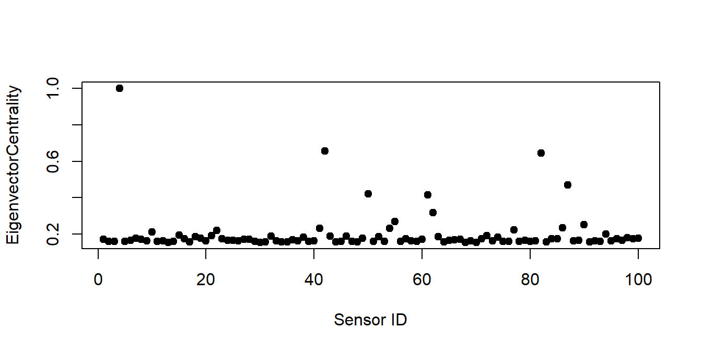

Chapter 3 Pre-Processing
MultiNav contains default options for anomaly scores for the novice analyst, but also enables the advanced analyst to provide custom calculated scores. The package also includes several functions for common data pre-processing tasks (used internally by MultiNav package) that can be used independently from the visualizations.
3.1 Univariate Matrix
Input: The function expects an input dataset in the format of data.table, data.frame or matrix which contains continuous variables from the same scale. A unique numeric row name should be assigned to each observation and will be used as unique identifier (id). If row names were not assigned, row number will be used as id.
A unique numeric column name should be assigned to each variable. Any missing data should be handled before calling the MultiNav() function. Note: Any records containing missing values will be omitted by default.
Output: Dataset with collection of univariate descriptive statistics performed on the values of each variable.
| Statistic | Description |
|---|---|
| min | Minimum value. |
| quantile_25 | Quantile 25. |
| median | Median value. |
| quantile_75 | Quantile 75. |
| max | Maximum value. |
| mean | Mean value. |
| sd | Standard deviation. |
| mad | Mad - Median Absolute Deviation from the median. Robust estimate of standard deviation. |
| Skewness | A measure of the asymmetry. |
| Kurtosis | A measure of the “tailedness”. |
Example
library(MultiNav)
data <- DendrometerSensorsuni_matrix<-Calc_uni_matrix(data)
head(uni_matrix)## id min quantile_25 median quantile_75 max mean
## 101 101 -2.8681051 -1.586566 -0.2859626 0.003064215 0.7149066 -0.7041083
## 102 102 -2.6999008 -1.671163 -0.2096194 0.196828205 0.5226045 -0.6457662
## 103 103 -2.6804906 -1.559330 -0.1550818 0.195357652 0.5531044 -0.6236780
## 104 104 -0.6118928 0.000000 0.8135215 1.913528423 2.9588621 0.9817285
## 105 105 -2.7398721 -1.352205 -0.0959520 0.243901975 0.6045355 -0.5772812
## 106 106 -2.4655656 -1.375499 0.0000000 0.367252422 0.7539952 -0.4833901
## sd mad skewness kurtosis
## 101 1.015367 0.9481736 -0.5796902 1.956918
## 102 1.005336 0.8239657 -0.5955111 1.819309
## 103 1.005586 0.7808334 -0.6645638 1.956463
## 104 1.008607 1.2331924 0.3027817 1.686112
## 105 1.004993 0.7058016 -0.7568686 2.131443
## 106 1.005245 0.7551929 -0.6472314 1.9304083.2 Quantiles Matrix
Input: The function expects an input dataset in the format of data.table, data.frame or matrix which contains continuous variables from the same scale. A unique numeric row name should be assigned to each observation as unique identifier. If row names were not assigned, row number will be used as id. Any missing data should be handled before calling the function. Note: Any records containing missing values will be omitted by default.
Output: Dataset with collection of five selected quantiles performed on each row (observation) of the data (5, 25, 50, 75 and 95 are the default quantiles). minimum and maximum of each row are also included. The ‘quantiles matrix’ is set in the exact format needed as input for the functional boxplot chart.
| First Header | Second Header |
|---|---|
| min | min value |
| quantile_a | by default = Quantile 05. |
| quantile_b | by default = Quantile 25. |
| median | Median value. |
| quantile_c | by default = Quantile 75. |
| quantile_d | by default = Quantile 95. |
| max | max value |
Example - Defalt Quantiles
quantiles_matrix<-Calc_quantiles_matrix(data)
head(quantiles_matrix)## seq_id min quantile_a quantile_b median quantile_c quantile_d max
## 1 1 0.000 0.000 0.000 0.000 0.000 0.000 0.000
## 2 2 -1.732 -0.004 0.043 0.101 0.174 0.242 1.019
## 3 3 -1.732 -0.017 0.137 0.222 0.271 0.384 0.948
## 4 4 -1.732 0.027 0.207 0.305 0.385 0.484 0.974
## 5 5 -1.732 -0.004 0.217 0.355 0.459 0.602 1.299
## 6 6 -1.732 -0.003 0.235 0.435 0.558 0.694 0.936Example - Custom Quantiles
quantiles_matrix<-Calc_quantiles_matrix(data, quantiles = c(0.02,0.2,0.8,0.98))
head(quantiles_matrix)## seq_id min quantile_a quantile_b median quantile_c quantile_d max
## 1 1 0.000 0.000 0.000 0.000 0.000 0.000 0.000
## 2 2 -1.732 -0.042 0.017 0.101 0.187 0.302 1.019
## 3 3 -1.732 -0.101 0.109 0.222 0.305 0.408 0.948
## 4 4 -1.732 -0.095 0.193 0.305 0.399 0.519 0.974
## 5 5 -1.732 -0.169 0.196 0.355 0.498 0.651 1.299
## 6 6 -1.732 -0.244 0.208 0.435 0.586 0.725 0.9363.3 Anoamly Scores
MultiNav provides several methods for calculating multivariate anomaly scores. The package provide only few methods, out of many other available methods (this is a popular area of research). We aimed to find methods that will likely be suitable for most use cases (that follow the data assumptions outlined). Note Selecting the right multivariate anomaly methods for each dataset needs to be done with care.
3.3.1 Hotelling’s \(T^2\)
Hotelling’s \(T^2\) is a popular multivariate method for anomaly detection. Calculating \(T^2\) requires estimation of the covariance matrix. MultiNav provides several variations of Hotelling’s \(T^2\) that are based on different methods of estimating the covariance matrix. More on Hotelling’s \(T^2\) and the selected variations in our upcoming paper…
data<-t(LambsWeight[60:62,])
T2 <- round(T2(data),2)
T2_spearman<-round(T2_spearman(data),2)
T2_mcd50<-round(T2_mcd(data),2)
T2_mcd75<-round(T2_mcd75(data),2)
T2_mve<-round(T2_mve(data),2)
T2_CrouxOllerer<-round(T2_CrouxOllerer(data),2)
T2_SrivastavaDu<-round(T2_SrivastavaDu(data),2)
Anomaly.Scores<- cbind(sensorID=as.numeric(row.names(data)),
T2,T2_spearman,T2_mcd50,T2_mcd75,T2_mve,
T2_CrouxOllerer,T2_SrivastavaDu)
head(Anomaly.Scores)## sensorID T2 T2_spearman T2_mcd50 T2_mcd75 T2_mve T2_CrouxOllerer
## [1,] 602 2284.92 2.29 40.74 21.45 34.05 27.79
## [2,] 608 1213.79 0.26 5.44 2.62 4.69 1.67
## [3,] 610 958.42 0.90 6.86 4.20 6.19 10.03
## [4,] 615 1062.74 0.57 3.04 2.31 3.71 7.88
## [5,] 617 1171.77 0.32 0.26 0.22 0.25 0.40
## [6,] 621 844.22 0.93 4.69 3.05 4.22 1.88
## T2_SrivastavaDu
## [1,] 11.93
## [2,] 2.04
## [3,] 3.57
## [4,] 5.68
## [5,] 0.84
## [6,] 1.083.3.2 Eigenvector Centrality
Another multivariate anomaly scoring method is based on Eigenvector centrality, which is a popular network centrality measure, calculated based on pearson correlation estimate. This method can be efficient for finding anomalies in data with high correlation levels (such as in our first example of dendrometers sensors).
data <- DendrometerSensors
EigenvectorCentrality<-EigenCentrality(data)
plot(EigenvectorCentrality, xlab="Sensor ID",pch = 19)